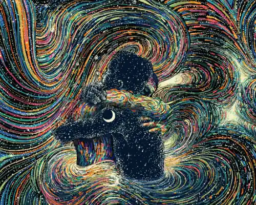

WebP Format Example

About This image
The artist uses many different colors and a layering swirl pattern to show individuals hugging each other. The bright colors contrast greatly with the black background.
Why WebP Format?
WebP is perfect for this art display because it supports the animation of the moving background. It supports the many different colors in the image and provides a smaller file size without losing quality.
Image source:Designboom